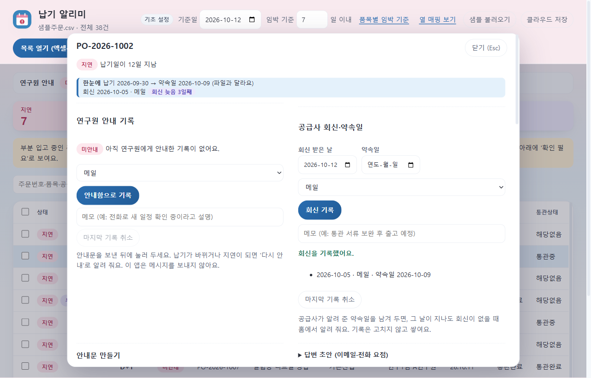
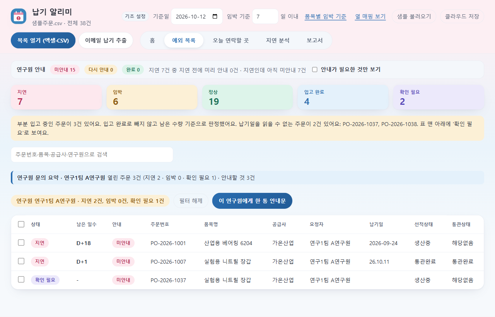
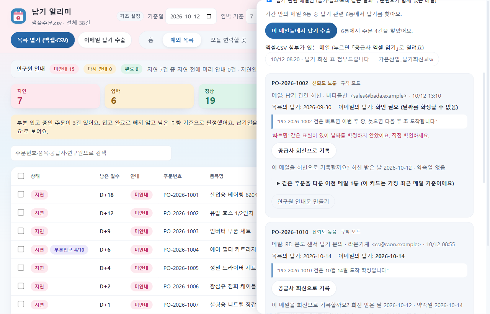

홈 — 파일을 열면 가장 먼저 보이는 "오늘 할 일"입니다. 항목을 누르면 그 주문으로 갑니다.예외 목록 — 지연 7 · 임박 6 · 확인 필요 2처럼 상태별로 요약하고, 안내 현황 막대로 아직 안내하지 않은 주문을 보여 줍니다.주문 상세 — 주문을 누르면 가운데 넓은 창이 열립니다. 예전에는 오른쪽 340px 좁은 칸에 세로로 길게 들어 있어 입력이 불편했습니다. 지금은 안내 기록과 공급사 회신이 나란히 놓이고, 닫기 단추나 Esc로 닫으면 보던 줄로 돌아옵니다. 좁은 창(900x600)에서도 스크롤 없이 "안내함으로 기록"이 보입니다.

공급사 회신·약속일 — 약속일이 지난 주문에 "회신 늦음 3일째"가 붙습니다. 그날 공급사에 연락했으면 조용히 둡니다. 회신은 지우지 않고 쌓으며, 잘못 넣으면 마지막 기록만 취소합니다.

연구원 문의 요약 — 연구원이 "내 주문 어떻게 됐어요?"라고 물으면, 그 연구원으로 거르는 즉시 열린 주문과 안내할 것을 한 줄로 답할 수 있습니다.

메일에서 회신 기록 제안 — 메일에서 근거 문장이 확인된 주문에만 "공급사 회신으로 기록"을 제안합니다. 날짜가 애매하면 약속일을 비워 두고, 사람이 누를 때만 기록합니다(자동 기록 없음).오늘 연락할 곳 — 공급사별 연락 이력과 다음 행동을 정리합니다.지연 분석 — 지연 원인(통관·서류, 생산 지연 등)의 비중을 봅니다.클라우드 저장 — 기본은 이 컴퓨터에만 저장하고, 켜면 기록을 Supabase에 사본으로 올립니다. 현재 상태와 지금 할 일을 맨 위에 보여 주고 끝낸 단계는 접습니다.